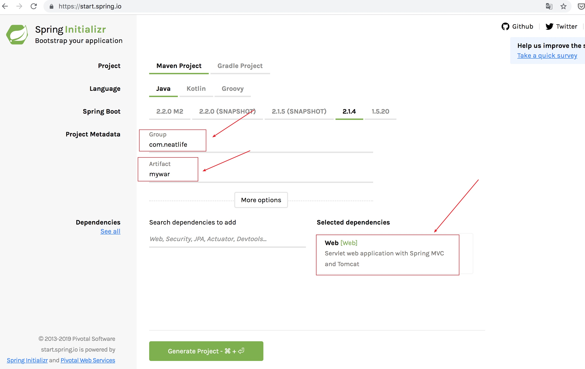
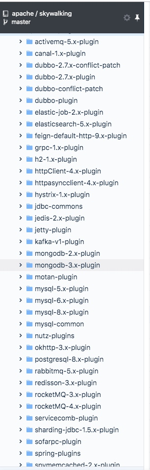
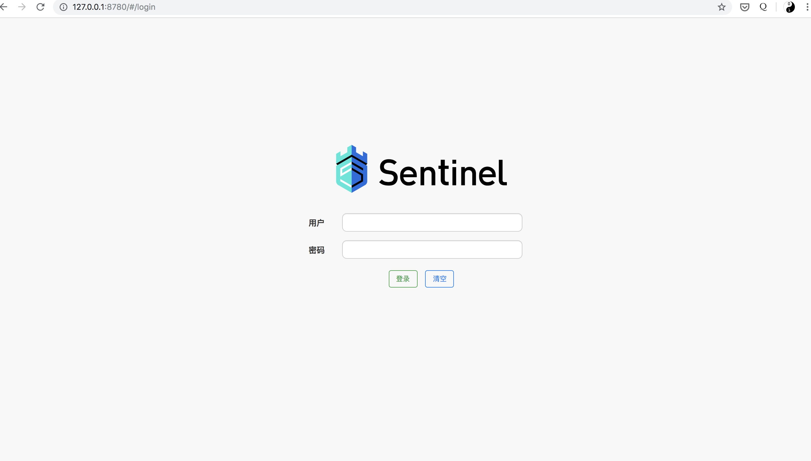
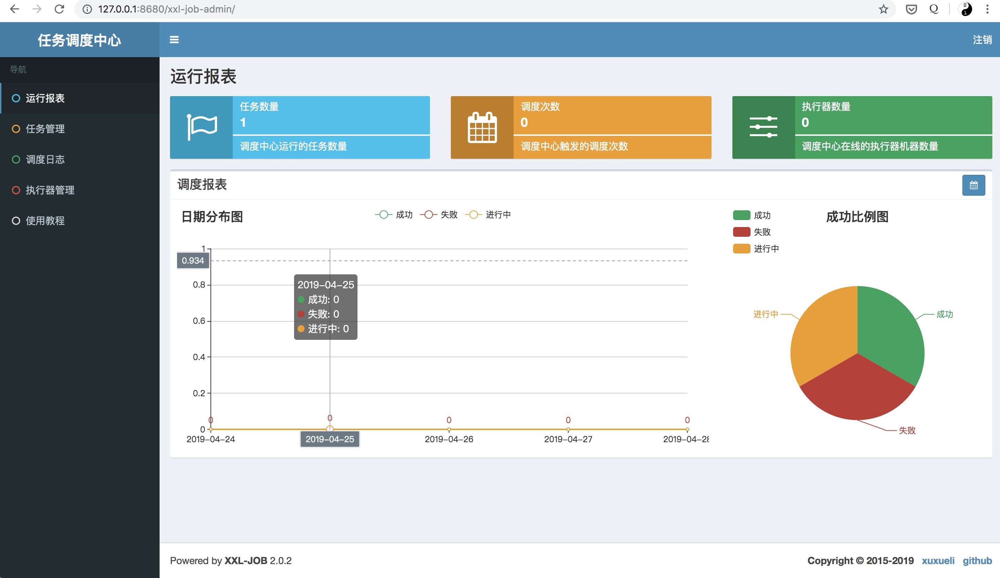
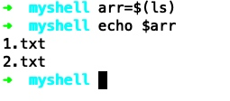
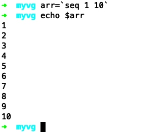

三分钟把spring boot打成war包部署到tomcat中
虽然一般微服务都是把spring boot项目打成jar直接启动，但是war包作为经典的项目启动方式，是有必要掌握的。
完整项目代码已上传github：https://github.com/neatlife/mywar
写作花费了作者大量时间，求赞，求关注 _(:з」∠)_
准备案例项目
可以直接拿现成的spring boot项目进行修改，也可以在https://start.spring.io/创建一个新的案例项目，比如：

如果是在start.spring.io上创建的新项目，需要把web组件加到项目里，这个编写测试接口会用到web组件里的控制器。
在spring boot中三分钟上手apache顶级分布式链路追踪系统skywalking
skywalking在apache里全票通过成为了apache顶级链路追踪系统
项目地址：https://github.com/apache/skywalking
官方文档：https://github.com/apache/skywalking/blob/master/docs/README.md
虽然官方文档很全，但是中文文档目前还没完全翻译过来，研究文档需要花费一些时间，下面作者整理总结了官方文档，可以帮助读者快速上手
skywalking拥有丰富的三方库追踪支持，参考: apm-sdk-plugin

常用的组件比如dubbo, httpclient, rocketmq, jdbc, hystrix等都已官方支持了
为了快速启动项目，会使用docker技术
下载编译
官方文档：https://github.com/apache/skywalking/blob/master/docs/en/guides/How-to-build.md
下载源码，并下载依赖的git子模块
git clone https://github.com/apache/skywalking.git
git submodule init
git submodule update
执行编译
mvn clean package -Dmaven.test.skip=true
在spring boot中3分钟上手阿里巴巴服务熔断系统sentinel
一直在用hystrix做熔断降级，但是无奈hystrix官方已经不再维护了，sentinel背后是阿里巴巴公司，并且一直在维护sentinel，所以先了解下，hystrix不够用时，可以换成sentinel
并且特性丰富，这里就使用如下两个核心功能
- 熔断
- 流控
启动Sentinel控制台
sentinel的控制台是由spring boot开发，特殊需求可以修改源码定制，源码参考：sentinel-dashboard
可以使用docker一键启动控制台
编写sentinel-dashboard的Dockerfile
FROM openjdk:8-jdk-alpine
ADD https://github.com/alibaba/Sentinel/releases/download/1.6.0/sentinel-dashboard-1.6.0.jar /sentinel-dashboard-1.6.0.jar
ENTRYPOINT ["java", "-Dserver.port=8080", "-Dcsp.sentinel.dashboard.server=localhost:8080", "-Dproject.name=sentinel-dashboard", "-jar", "/sentinel-dashboard-1.6.0.jar", "-Dfile.encoding=utf-8"]
构建sentinel-dashboard镜像：docker build -t sentinel-dashboard . 然后启动
docker run --name sentinel-dashboard \
-it --rm -p 8719:8719 -p 8780:8080 sentinel-dashboard
其中8080是sentinel web控制界面端口，8719是sentinel应用端和控制台通信端口，参考配置控制台信息
打开 本机ip:8780 查看效果，默认的用户名密码都是 sentinel

在spring boot中3分钟上手RPC框架Dubbo
官方提供的demo太多，内容也很详细，资料也多，导致不易快速上手，以下是我根据官方文档整理出来的快速上手步骤
首先rpc调用都需要有注册中心，zookeeper, nacos，redis等都可以拿来作为注册中心
这里为了演示方便我们还是拿经典的zookeeper做演示
完整代码已上传github：https://github.com/neatlife/my-dubbo-spring-boot
下载后启动zookeeper即可运行
获取一个可用的zookeeper实例
可以使用docker启动zookeeper，比如 docker-compose-single.yml
version: '3.1'
services:
zoo:
image: 31z4/zookeeper
restart: always
hostname: zoo1
ports:
- 2181:2181
然后执行docker-compose -f docker-compose-single.yml up -d命令启动zookeeper实例
在spring boot中3分钟上手分布式任务调度系统xxl-job
xxl-job在鼎鼎大名的quartz任务调度系统上进行了二次封装，变得更好用了
项目地址：https://github.com/xuxueli/xxl-job
官方文档：http://www.xuxueli.com/xxl-job/#/
虽然官方文档也很全，很详细，但需要多花些时间上手，以下是我根据官方文档整理出的快速上手步骤，可以减少上手需要花费的时间和一些生产使用需要注意的点
在mysql中执行以下sql
tables_xxl_job.sql
这个sql创建xxl-job的数据库和调度任务的表
记下mysql的地址，用户名和密码
使用docker一键启动调度中心
docker run -d --rm \
-e PARAMS="--spring.datasource.url=jdbc:mysql://你的mysql数据库ip:3306/xxl-job?Unicode=true&characterEncoding=UTF-8 --spring.datasource.username=你的mysql数据库用户名 --spring.datasource.password=你的mysql数据库密码" \
-p 8680:8080 \
--name xxl-job-admin xuxueli/xxl-job-admin:2.0.2
在浏览器中使用默认用户名和密码 admin 123456 登陆查看效果

三分钟上手shell语言
if语句
if [ "$arg1" = "$arg2" ] && [ "$arg1" != "$arg3" ]
then
echo "arg1和arg2相等，arg1和arg3不相等"
exit 3
elif [ $arg1 = $arg2 ] && [ $arg1 = $arg3 ]
then
echo "arg1, arg2, arg3均相等"
exit 0
else
echo "arg1, arg2, arg3都不相等"
exit 4
fi
for 循环语句
for i in $(seq 1 10);
do
echo $i
done
arr=`seq 1 10`
for i in $arr
do
echo $i
done
while语句
# 初始化变量值为0
a=0
while [ $a -lt 10 ]
do
echo $a
a=`expr $a + 1`
done
case语句
# 初始化变量a
a=4
case "$a" in
"1")
echo "a等于1"
;;
"2" | "3")
echo "a等于2或3"
;;
*)
echo "a不等于1，2或3"
;;
esac
将一个命令的输出保存到变量
使用$(一个命令)就可以获取这个命令的输出了，然后可以把这个输出赋值给一个变量
比如把当前目录的文件保存到变量中
arr=$(ls)
操作效果如下

整数运算操作
使用双小括号的语法：$((运算内容))，返回运算后的结果，支持+, -, *, /, %, **, +=, -=, *=, /=, 自增，自减，进制转换等操作
i=1
b=$((i+1))
c=$((i=i+1))
d=$((i++))
e=$((++i))
echo $b # 2
echo $c # 2
echo $d # 2
echo $e # 4
处理换行
echo "aaa:bbb:ccc:ddd" | tr ":" "\n" | sed '/ccc/a\Chanpter 1'
一些注意的点
变量声明时不需要加$符号，但是使用时需要加，=左右不能存在空格

sed可做文件内容的字符串替换
awk可做文件内容输出的格式化
shell的操作符分数字和字符串，注意使用对应的操作符，文件也有对应的操作符，参考：http://www.tutorialspoint.com/unix/unix-basic-operators.htm
查看linux发行版: cat /etc/*release
查看进程树
pstree -p 进程的id
ps aft
参考资料
- https://www.cyberciti.biz/faq/unix-linux-bsd-appleosx-bash-assign-variable-command-output/
- https://stackoverflow.com/questions/49110/how-do-i-write-a-for-loop-in-bash
- https://stackoverflow.com/questions/2359270/using-if-elif-fi-in-shell-scripts
- https://stackoverflow.com/questions/37985926/unix-shell-script-while-loop
- http://www.tutorialspoint.com/unix/unix-basic-operators.htm
- https://stackoverflow.com/questions/5562253/switch-case-with-fallthrough
Copyright © 2015 Theme used GitHub CSS. 访问人/ 次